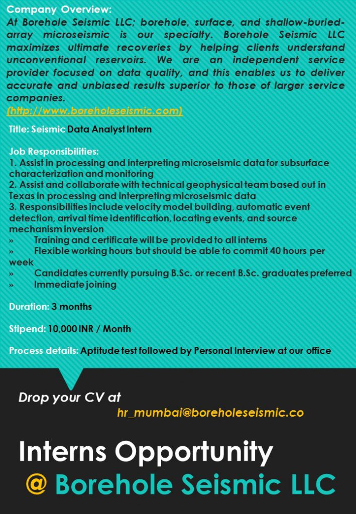

R.J. College Internship Section
TCS has opened its National Qualifier Test (NQT) registration for 2025 batch graduates. Eligible B.Com, BMS, and BA students can apply via the official TCS portal.
R.J. College (Autonomous) is hosting Clerex Technologies for a multi-stream campus recruitment drive. Registration open till 1st February 2025, 10:00 AM.
Quirfit invites applications for full-time intern positions across HR, Sales, and Business Development domains.
The AICTE Internship Portal provides verified internship listings and connects students with industry mentors. Students from all streams can apply online.
Medical-grade alcohol supplier Mehta Enterprises offers internships in marketing and client relations. Great opportunity for BBA/B.Com students.
A six-month paid internship for B.Sc/M.Sc (Chemistry & Microbiology) students. Gain practical lab experience in testing and analytics.
TCS is recruiting Science graduates (IT, CS, Statistics, Physics, Math) under its SMART Hiring program. Apply before 5 Dec 2024.
Open roles for event and influencer management interns. Apply before 30 Nov 2024.
Interns will work on borehole seismic data collection and analysis. Applicants with backgrounds in Physics, Statistics, or CS preferred.

Capital First Ltd is the second largest NBFC in India providing consumer durable loans. We look forward to you joining us for a 3-month internship program which will give an overview of the financial framework and NBFC operations. The internship will help you understand various loan products, loan lifecycle, and documentation processes. This experience aims to put candidates on the path of learning.
- Duration: 3 Months
- Location: Electronics Stores across Mumbai
- Payroll: Mehin Consultancy
- Certificate: 3-Month Experience Certificate (sample attached)
- Stipend: ₹150 per day (₹4,500/month)
- Timings: 11:00 AM – 8:00 PM or 12:00 PM – 9:00 PM
Documents required for salary transfer:
- Photo ID
- Address Proof
- Cheque in the name of Candidate
- Two passport-size photos
The Saviours (thesaviours.org) was established on 21/10/2014 with the aim of eradicating blood shortages in India. It has grown into a team of 300+ volunteers, maintaining a database of over 15,000 emergency donors and having arranged 500+ donors in emergencies. The NGO has executed multiple blood camps, awareness drives, and events across Delhi, Mumbai, Bangalore, and Kolkata.
The Saviours promotes leadership by empowering youth to lead, organize, and execute social campaigns. None of the interns are paid; instead, they contribute their time and resources to the cause. The NGO was featured in the novel “How an iPhone Made Me the Youngest Billionaire” and a YouTube documentary titled “The Saviours” (Watch here).
During festivals, interns participate in #HumanityWeek — donating to the less privileged, taking #SelflessSelfies, and spreading joy through social media. Visit the NGO’s Facebook page for photos and updates: fb.com/thesavioursindia
- Profile: NGO Communication and Leadership
- Duration: Minimum 10 days (no upper limit)
- Stipend: Not Applicable
Responsibilities:
- Communicating the NGO’s objectives and registering new donors
- Organizing awareness campaigns and blood donation events
- Leading teams and mentoring fellow interns
- Handling blood requirement requests
- Managing and enhancing donor databases
How to Apply: Share your Contact Details (Email ID, Phone Number, College Name) and internship preferences.
After selection, further details will be communicated via email.
Last Date: Not Applicable
Email: haran.saviours@gmail.com
Location: Delhi (NCR), Kolkata, Mumbai, and Bangalore